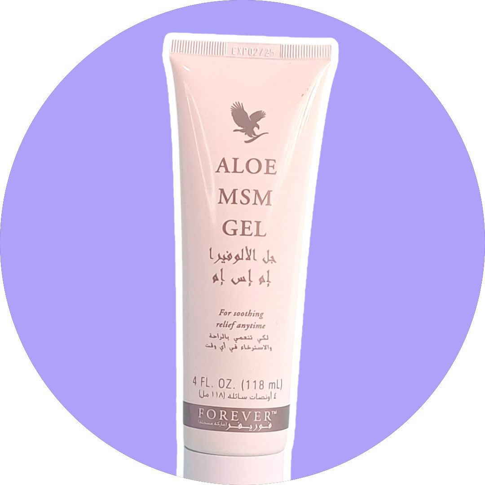
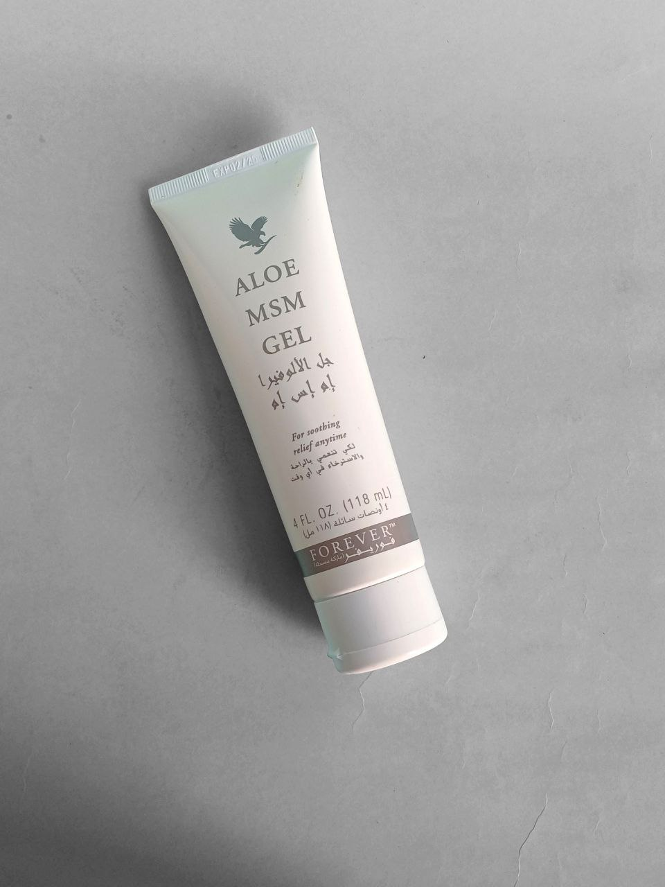
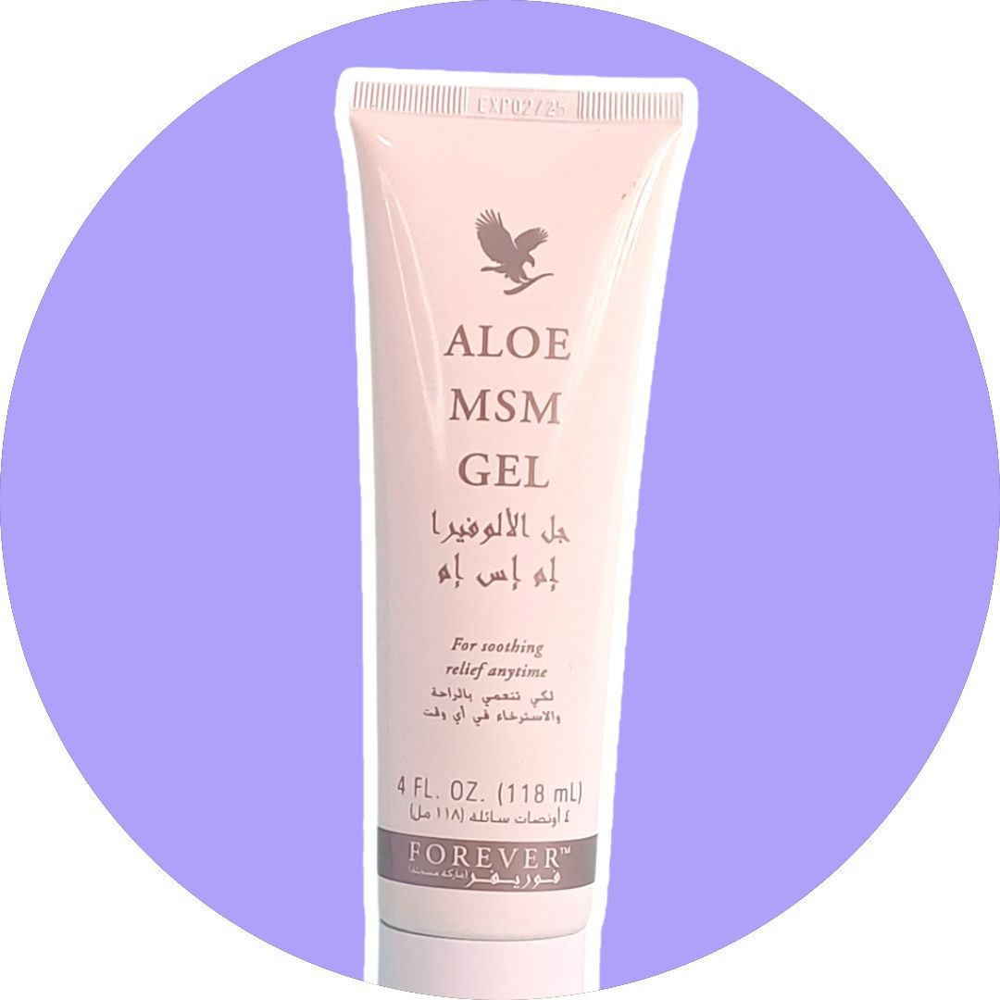
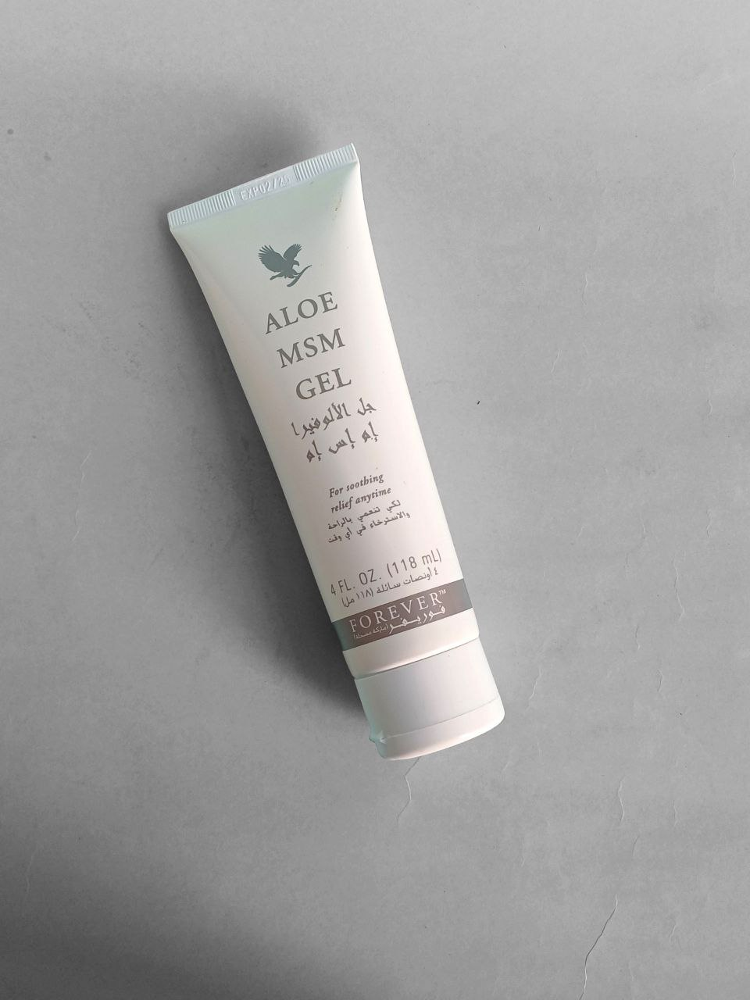
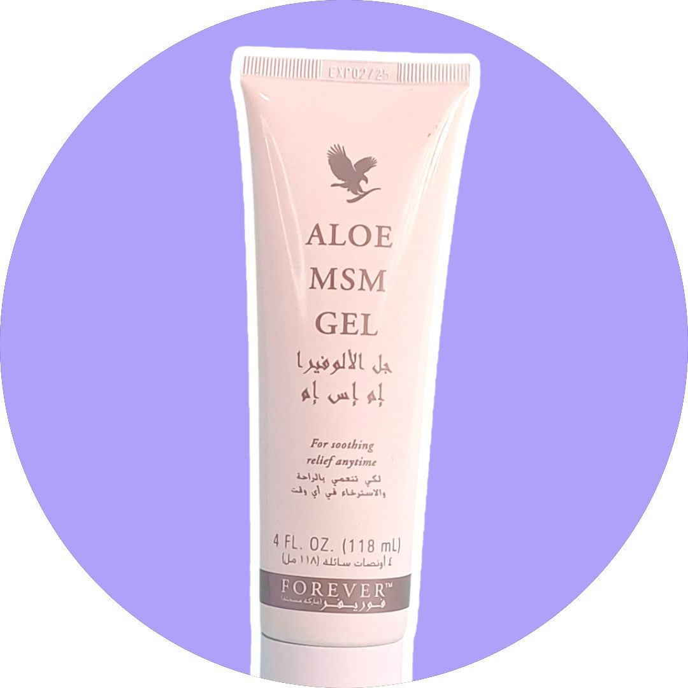
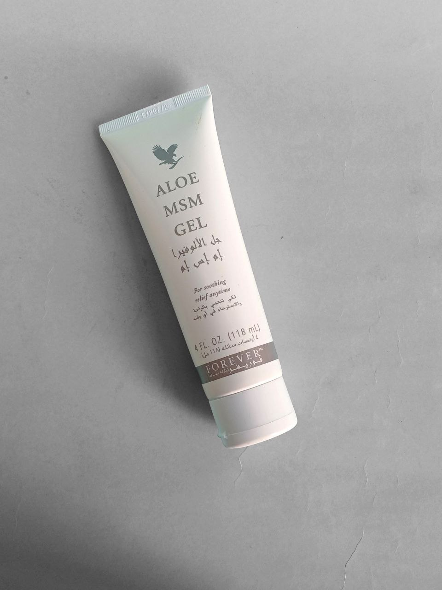
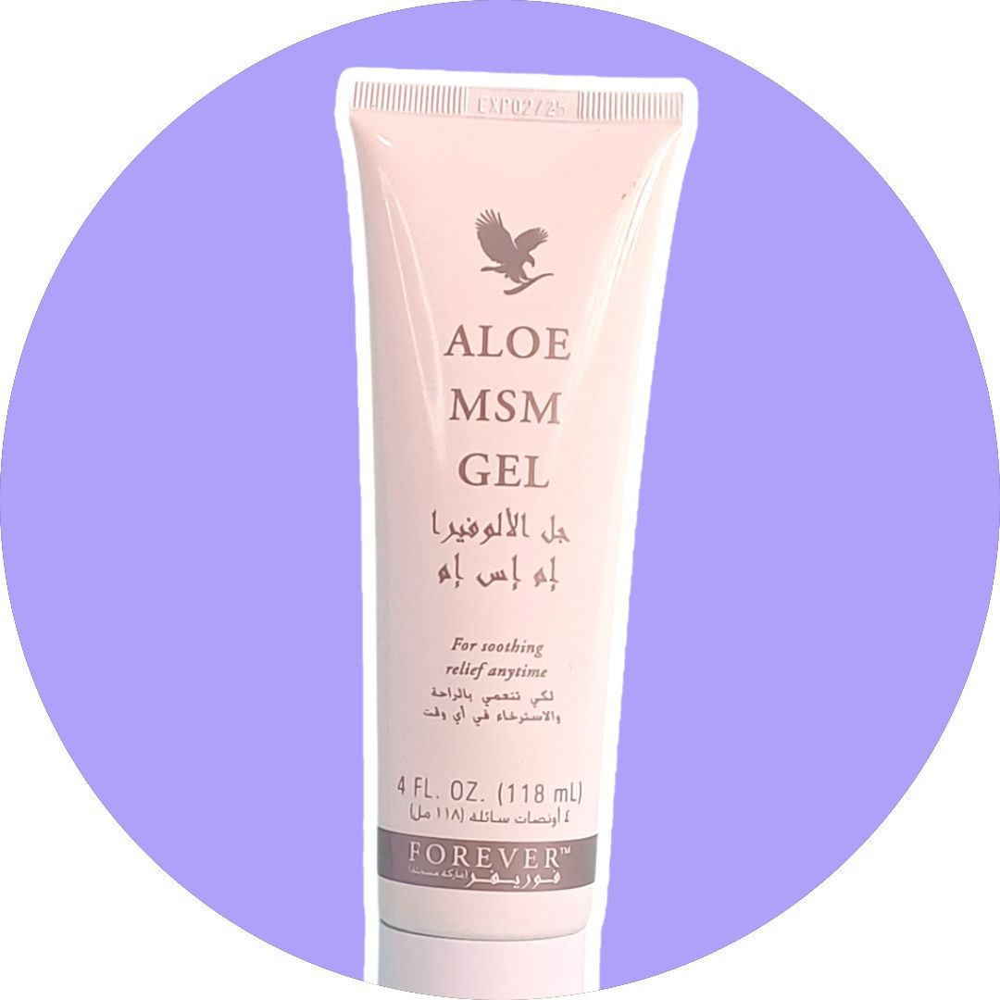
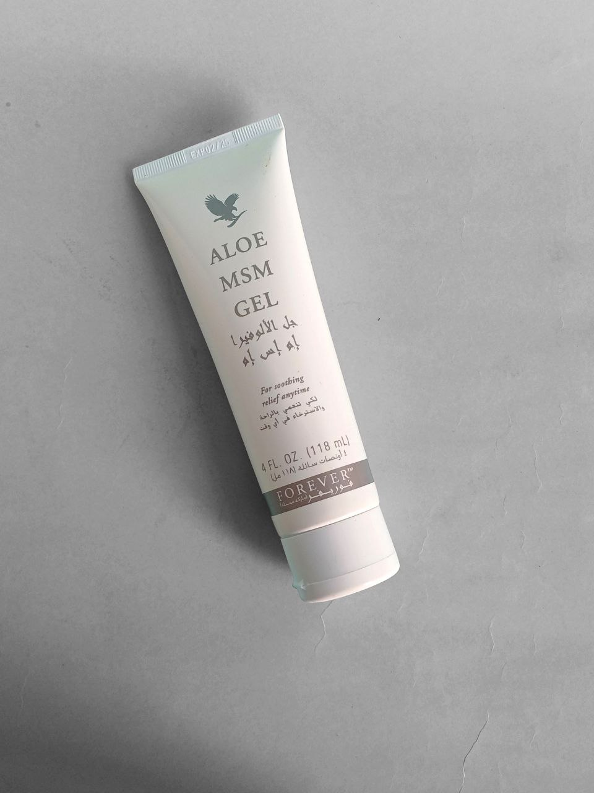

ألو ام اس ام جيل هو تذكرتك للحصول على الراحة عندما وأينما كنت في حاجة إليها. قمنا بدمج الصبار الداخلي النقي مع ميثيل سلفونيل ميثان (MSM)، وهو كبريت عضوي موجود في العديد من الكائنات الحية. يتمتع مكمل إم إس إم الغذائي بخصائص قوية لتهدئة البشرة بالإضافة إلى جل الصبار النقي الذي يوفر راحة عميقة وترطيبًا.
تعمل إضافة مستخلص أوراق إكليل الجبل على جذب الماء إلى البشرة للحفاظ على ترطيبها وراحتها. هذا الجل المتعدد الاستخدامات ضروري لأي حقيبة رياضية. ضعيه بكمية وفيرة ودلكيه على البشرة لتهدئة التهاب المفاصل والعضلات بعد تمرين شاق. إذا كان أسلوب حياتك سريع، أظهر لجسدك الحب الذي يستحقه واستعد للمغامرة التالية.
لكن القوة المهدئة لـلألو ام اس ام جيل لا تتوقف عند هذين المكونين. تشتمل هذه التركيبة الواضحة غير الملوثة على مستخلصات عشبية طبيعية مثل زيت أوراق شجرة الشاي ومستخلص لحاء الصفصاف والجلسرين لتهدئة البشرة وترطيبها.
ضع كمية معتدلة ودلكيه على البشرة بحسب الحاجة. تجنب ملامسة العينين. في حالة حدوث تلامس، اغسل بالماء لعدة دقائق.